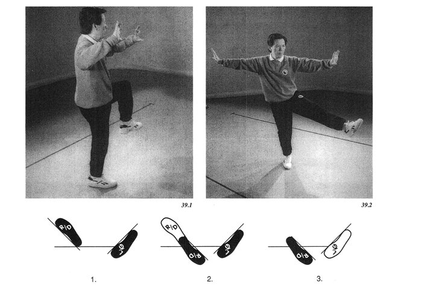

32 heel kick
turn body and kick with heel
пятка пинок
повернуть тело и ударить пяткой

Part A: After the kick, place the left foot down behind you and cross the arms at the wrists, palms inward (left hand inside). Shift your weight to the left foot as you tum to the left, and pivot the right foot on the heel 180 degrees to the left. Shift your weight back to the right foot, stand up and raise the left knee. (Figure 39.1)
Part B: Extend the left leg in a slow kicking motion. At the same time rotate both hands away from the body, pushing the left palm in the same direction as the left foot is kicking, and pushing the right palm towards the opposite direction. (Figure 39.2)